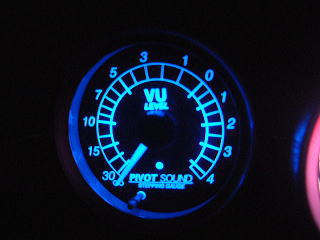
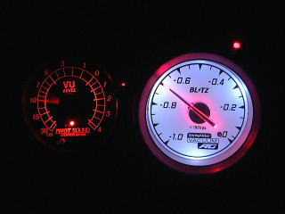

| 納車された時の画像 | 後ろ姿です。ナビはパナソニックです。 |
| １６インチホイルとケンスタイルのエアロ 、エスペリアのサスを装着しました。 サスは４センチも下がる割りに乗り心地が良く、 コーナリング最高です。しかし、フロントが擦ってしまうので、交換する予定です。（地面とスポイラーまで８センチしかない状態です） |
サイドから |
 |
|
| リアからの眺めが気に入っています | ホイルは５次元ファイアーボールです。 １ピースでリムまで延びるスポークは大きく見せる効果があります |
| マフラー交換したいのですが、近所迷惑なのでマフラーカッターを装着しました。 普通に付けると下向きになるので、この状態にするのに苦労しました。 |
やはりフロントスポイラーを擦るのでサスをノーマルにしました。タイヤハウスが目立ちます。 |
| ノーマルサスのリアビューです | 地上高を確保するため、タイヤを１９５−４５から１９５−５０に変更して、サスをＴＥＩＮのＨＩＴＥＣに変更する予定です。１９５−５０にするとタイヤハイスのインナーに擦る可能性があります。 さてどうなるか？ |
| サスとタイヤを交換しました。サスはＴＥＩＮ，タイヤは195-50のﾖｺﾊﾏDNAです。 フロントスポイラーは地面から１１センチ余裕が出てやっと擦らなくなりました。 インナーとの接触もありません。 大成功です。 |
サイドもいい感じになりました。 マイナー車はいじり甲斐があり楽しいです。 |
| 最近の２台の写真です | 内装ＵＰしてみました。 ウォーム内装に皮ステアリング、オートエアコンを装備しています |
| 間接照明は、センターピラーと荷室上部の４箇所に設置しています。 | バキューム計を装着しました。ブリッツ製です。 |
 |
|
| この針はかなり忙しく動いています。 取り付けは面倒なので頼んでしまいました。 |
夜はかなり綺麗な白色に灯ります。機能的には使っていません。ただのドレスアップですね。 |
|  | |
| PIVOTの音量レベルメータ（ＶＵレベルメータ）を装着してみました。ワーニングレベルは任意に設定でき、ワーニング時は左のように赤く点灯します。 | 右の青とは若干異なる場所で点灯するため、ワーニングだという事を強調しています。 |
|  | |
| 両方ともφ６０ですが、ＶＡＣＵＵＭを手前に付けているので大きく見えます。 夜間はかなり騒がしくなっています。 |
マフラーを装着しました。ＲＳ★Ｒ EXMAG SPORTSです。 |
 |
|
| 出口は１０１φでいい感じに収まりました。 | K'specのトルマリンシートカバーを装着しました。フィット感はいまいちのようですが、満足しています。 |
 |
|
| ユーロアルミアンテナに付け替えてみました。 あの長いアンテナは、洗車の時邪魔だったので、すっきりした感じです。電波の受信状態も問題ありません。 |
２００５年最後の写真です。 |
| レイズのカンピオナトＳＳ７ ゴールドです。 | １７インチのためかなり大きく見えます。 |
| １７インチ７Ｊ＋３５、２０５−４０−１７です。 | リアからです。 |
| 前回装着のファイアーボールは、＋４２にスペーサ＋１０なので＋３２だったのでした。チョット中に入っています。 | KINGWOODの６０００Kに交換しました。H1球です。リレーを付けなくても問題なかったので、簡単に装着できました。しかし、コルトのボンネットの空間が狭いのでバラストの固定が大変でした |
| フラッシュなしでの画像です。 | 明るいＬＥＤを９個使いました。それが左右なので、凄く明るいです。自作なので、左右で１６００円程でした。このようにコルトの場合は、スペースがないので、結構苦労します。特に奥行きがありません。 |
 |
|
| 点灯するとこんな感じです。 |